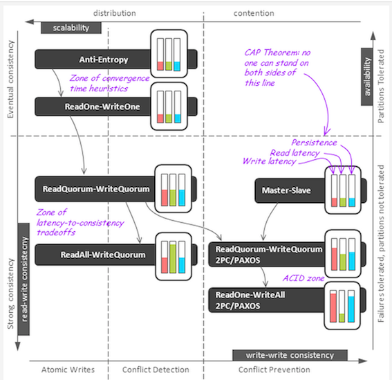

Learning Outcomes
Ensuring focused goals
Writing down a short list of high-level goals gives me a focus for every aspect of the course:
Course outline (advertising the course to prospective students)
How do we characterize “kinds of outcomes”?
Bloom’s cognitive levels
- Above principles all from this category
Process skills/Program outcomes
- Presenting arguments typical to the field
- Critically assessing within genres typical to the field
- Reading diagrams typical to the field
- Team work
- Use of instruments, tools, or methods typical to the field
- Applying key principles across a range of domains
Values
- Some of the most heartfelt yet also most difficult to incorporate
- In a content-based course (and discipline!) these tend to be pushed into subtext
- I write these in terms of choices I want the students to consider
Example: How two learning outcomes drove a suite of activities
Cognitive outcome:
Make appropriate tradeoffs of consistency versus availability for different features in a design.
Level: Create
Level: Create
Process skill:
Reading diagrams typical to the field
Presentations organized around a consistency-availability diagram:

Assignments 5 and 6 asked students to design systems using these tradeoffs
Final exam
-
Review used a modified form of the diagram

-
Exam asked them to locate different assignments on the same diagram